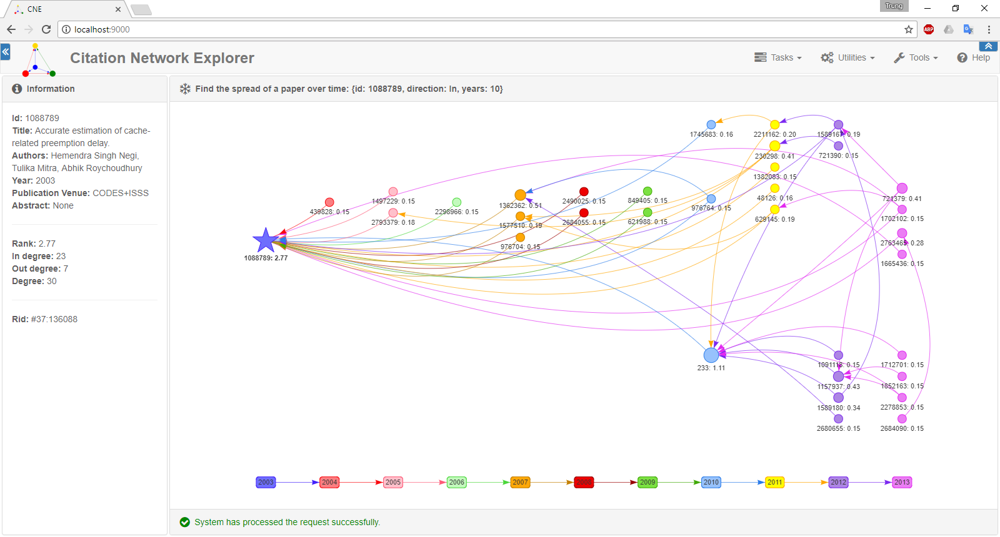

Large Graph Analytics
Visualize the whole graph
Visualize the whole graph after calculating page-ranks
Find the influence of the paper with id = 2571064
Find the connection component of the paper with id = 233

Find the propagation of a paper over time (Direction: IN (forward))
Find the propagation of a paper over time (Direction: OUT (backward))
Find the propagation of a paper over time (Direction: BOTH (forward and backward))
Find the propagation of a paper over time (Direction: BOTH (forward and backward))